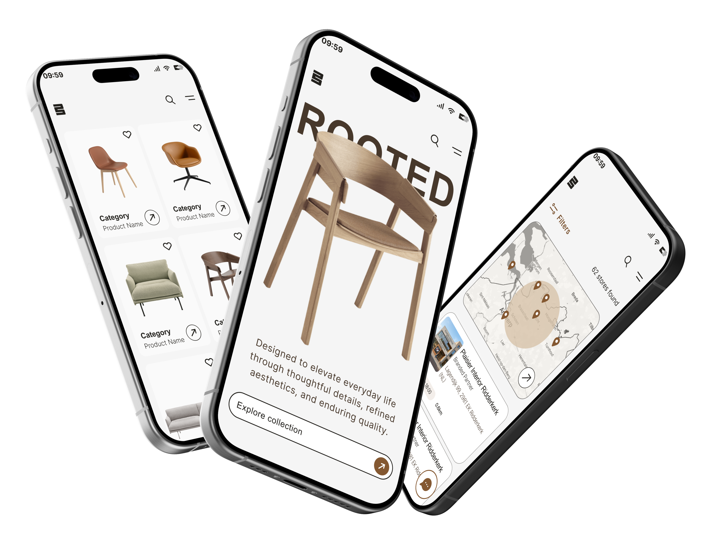
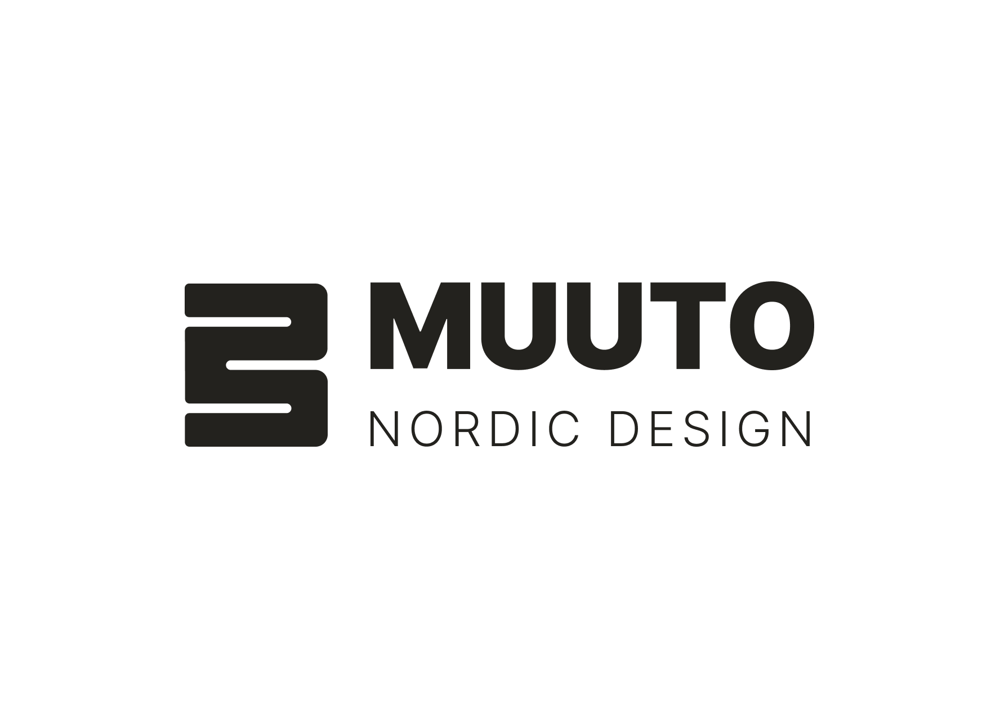
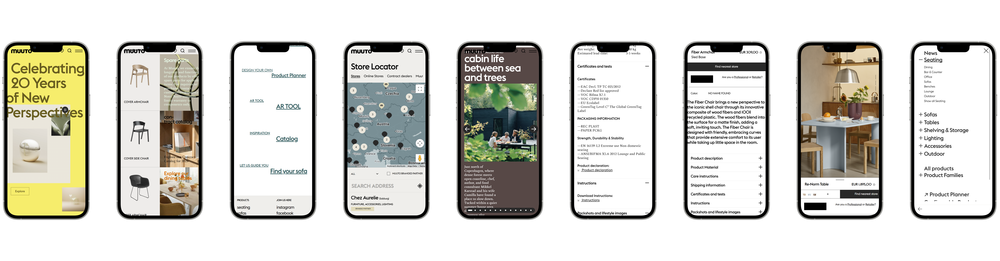

A brand identity and website redesign for Muuto, focused on strengthening brand
recognition, improving the digital experience across desktop and mobile, and creating a
more cohesive visual system — while preserving the brand's Scandinavian heritage.
Full redesign of the existing website — desktop and mobile — plus a new brand identity.
Deliverables
New brand identity, UX research, wireframes, UI kit, hi-fi prototype, usability test report.
01 The brand
Rooted in Scandinavian tradition
Muuto is a contemporary furniture and interior design brand rooted in Scandinavian
tradition. Its core mission is to bring new perspectives to Nordic design through
simplicity, craftsmanship and constant innovation — the name itself comes from the
Finnish word muutos, "new perspective".
While Muuto enjoys a strong visual presence, its current digital branding lacks
distinctiveness and doesn't fully express the concept behind its name. The core challenge:
build a more recognizable identity while maintaining the premium, ultra-minimalist
character of the brand.

02 Brand Redesign
A modular brand mark
The new identity introduces a symbol based on the letter "M". By rotating and simplifying its shape, the symbol reflects Muuto's approach to creating products that can be combined and adapted to different needs.

Current Logo
Strengths:
Modern and easy to read.
Strong visual consistency.
Weaknesses:
Not very distinctive.
No standalone symbol for small formats.
03 The current site
Where the experience was breaking down
The discovery phase revealed several issues affecting usability, accessibility, navigation, and the overall user experience.

Visual inconsistency: Irregular layouts, spacing, and color usage reduce clarity.
Confusing navigation: Low contrast, missing breadcrumbs, and small mobile touch targets make navigation harder.
Accessibility issues: Missing alt text, poor keyboard navigation, and unlabeled buttons limit inclusivity.
Unclear user experience: Mixed user needs, unclear product discovery, and missing support features create friction.
05 Design guidelines
Visual System
Color palette
Walnut Brown#47382B
Sand Beige#D5C0A6
Caramel Wood#845831
Charcoal Black#23221E
Porcelain White#F5F5F5
Typography
Aa — Arial
Inter — regular, for product descriptions and long-form reading across all breakpoints.
06 The Redesign
Creating a more intuitive experience
Key improvements:
Clearer navigation and information architecture.
More consistent and accessible interface.
Better product discovery with wishlist support.
AI-assisted store locator for a smoother retail journey.
09 Testing & outcome
Usability Testing
The redesigned experience was validated through moderated usability testing to identify friction points and gather qualitative feedback.
Key Findings & Iterations:
Product availability: Added contextual stock status to reduce user uncertainty before checkout.
AI Integration: Embedded an AI assistant directly on the Product Page to answer specific item-related questions.
AI Onboarding: Improved the chat interface with clearer prompts and suggested queries to guide first-time users.